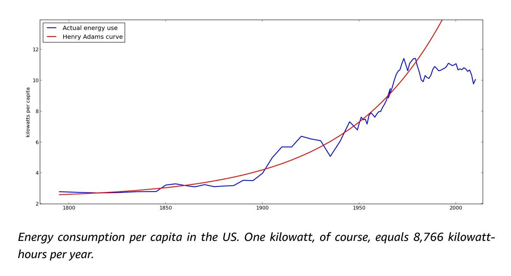
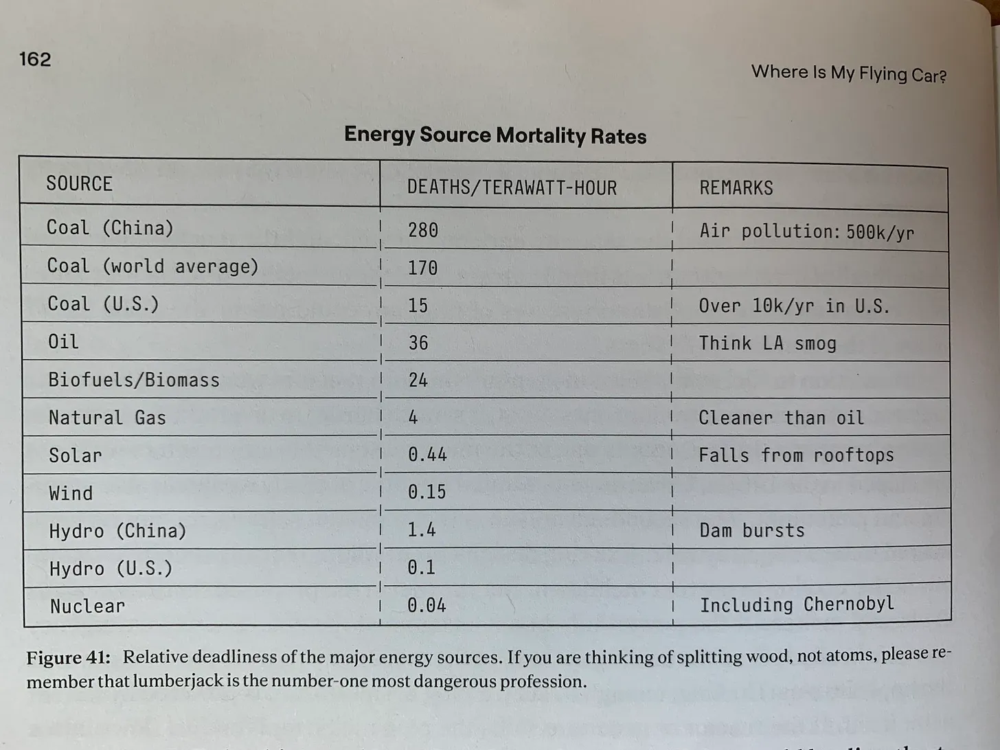

Book Review: Where Is My Flying Car? - J. Stoors Hall
Published on February 4, 2022
Overview
There is a growing fear, particularly in the West, that today’s children may not on average attain living standards any higher than those of their parents, and that much of the antcipated futuristic technology never came to fruition. Where Is My Flying Car? provides a much-needed technological framing for this new zeitgeist. Hall includes many of the charts popularized by “WTF Happened in 1971?” for this book’s premise of post-1970’s secular stagnation, but he does not dwell on economic indicators. The main indicator of stagnation that this book points to is the existence of ready-to-build, yet unbuilt, technology.
In Hall’s perspective, the greatest barriers to progress are cultural, not technological. For context, this makes a break with Tyler Cowen’s book, The Great Stagnation, which attributes lower economic growth to all of the low hanging fruits having been picked in previous generations.
To read this book you must be prepared to imagine that a radically different future is possible, that there are always fruits to be picked if one studies science enough — because the book is filled with, frankly, inconceivable claims. Powered by atomic batteries, “your iPhone would never need charging, and your Tesla would have a range of 3.5 million miles” (160). With nanotech as described in Eric Drexler’s Nanosystems, we could have “a pocket iPrinter capable of conjuring up anything from snacks to items of clothing out of thin air” (271) and “cell-repair machines that make us considerably less vulnerable to the health effects of radiation; a happy by-product of such technology would be allowing us to live in space (210).” One molecular motor designed by Drexler “would produce about three billion horsepower-per-pound” (211). Orbital infrastructure such as sunshades could control the temperature of Earth with ease and “generate more power than the human race currently uses” (272), which could be used in space to “focus a few petawatts of sunlight on [an asteroid approaching Earth]… enough to prevent a strike” (274).
Why aren’t we living in that kind of future? It is not because further progress is impossible, but rather that our culture’s values have shifted dramatically. For Hall, the Morlock-Eloi dichotomy updated in H.G. Wells’ The Shape of Things To Come best describes the phase change humanity is currently undergoing. “The villains of Things to Come are well-to-do people who feel that they have enough for a comfortable life, and don’t want any accomplishments going on in their backyard” (14). The phrase NIMBY (Not In My Backyard) has become very popular because of this trend.
Hall and Wells believe that at the root of our cultural problem lies humanity’s failure to adapt to a changing evolutionary landscape. In contrast to all of human history, exploration of the unknown is not necessary to survive. We’ve moved up Maslow’s hierarchy, and life is so comfortable that we have raised our bar for risk-reward tradeoffs. As a species that has traded security for possibility, still craving esteem but disregarding accomplishment, “we have managed to create a society in which a growing majority of people are doing useless, and in many cases counterproductive, work, but in which we all believe that we’re making the world better” (97). Hall posits a sort of collective delusion in which, “in the age of Aquarius, our focus largely shifted from conquering the physical world, to conquering the interior worlds of other people” (97).
I. Defining “The Future We Were Promised”
Hall first recalls “the future we were promised” by listing 28 technologies that Asimov, Clarke, and Heinlein, “the major technologically savvy science fiction writers of the 1960s,” predicted for the present day (18). To name a few:
- Orbital space stations/li>
- Nuclear rockets
- Pocket telephones and videophones
- Nuclear fission & fusion power
- Wireless energy transmission
- Transportation at 1,000 miles per hour and one cent per mile
A majority of the technologies in this long list have not been realized. Sci-fi writers of the past may appear optimistic, especially to younger generations, but Hall is old enough to remember their reasoning.
To many people of 1962, including my eight-year-old self, it was inconceivable that we would be using the same flying machines now that we did then. “What will our transportation technology look like in 50 years?” You might have asked them. And they would have answered, “Well, look what it was like 50 years ago, in 1912!” (24).
— J. Stoors Hall
Flying cars currently on the market use roughly the same power systems and control surfaces as helicopters and/or planes of the past. They have been ready for mass-manufacture since the 1950’s but “the agencies turned thumbs down… because everybody would have one, and we couldn’t handle the [air] traffic” (110). Most people don’t like them because they are loud or appear dangerous. Hall disputes this, for example by citing that the leading cause of death in private plane owners is by motorcycle accident, but he also recommends that we use more advanced tech.
Hall discusses many possibilities for flying cars which may improve performance. One is composed of a shape-changing structure, made possible with molecular manufacturing, such that the wing can adapt to various flight regimes.1 Another type of flying car is the ionocraft which propels itself by maintaining a voltage and ionizing the surrounding air, without requiring moving parts. One example of a working prototype, though not capable of carrying much weight, is Subrata Roy’s patented WEAV.2TODO
Exponential improvement in technologies has been limited to electronics, but Hall believes that all of technologies he lists can exhibit similar trends. The longer we put off experimenting and building, the further back in this trend we are. Making a case for molecular manufacturing all the way back in 1959, Richard Feynman said in his lecture, “There’s Plenty of Room at the Bottom”, “In the year 2000, when they look back at this age, they will wonder why it was not until the year 1960 that anybody began seriously to move in this direction” (1).3TODO
If we could “arrange the atoms one by one”, as Feynman said, engineering practices and living standards would look dramatically different. Some of Hall’s more ambitious claims for nanotechnology include, “[With nanotech] you could physically rebuild America in a week” (62), and “a fairly conservative nanofactory design reproduces itself in an hour” (57).
II. Posing the question: What happened to the future we were promised?
So, why not? Why do some technologies make the jump from theoretically possible to successfully realized, while others do not? Why did we miniaturize computation but not manufacturing, both of which Feynman clearly foresaw?
Hall is far from the only one bewildered by our shortcomings. A debate between Peter Thiel and David Graeber resulted in agreement on at least one key issue: technological innovation has fallen dramatically short outside of electronics. “We all kind of knew what was going to happen,” Graeber says, before rattling off a few Space Age predictions for the 21st century, “and I don’t think any of us expected we would get all of that stuff within our own lives, but I don’t think it occurred to any of us that we wouldn’t get any of it.”
In contrast, Graeber notes, those growing up at the turn of the century reading HG Wells and Jules Verne did get a lot of the tech they were expecting. “Flying machines, submarines, talking boxes,” whereas today, “even the things we have poured resources into, we never got anything close to what we thought we’d have.” Neither Thiel nor Graeber quite provided an explanation for this discontinuity. Hall continues the dialogue in his book, noting Thiel’s catchphrase, “We wanted flying cars; instead we got 140 characters” (27).
III. Answering the question: Every problem is an energy problem
Graeber is not entirely correct, though. Hall points out that, “as a whole, the science fiction writers were roughly on target, in most fields except transportation and space exploration… Pocket phones, and the global library, are here with a vengeance. They call for robots in the 2020s, for bioengineering in the 2030s… but in transportation they thought we might have interstellar probes, asteroid mining, and gravity control by 2050” (20).
So, we did get some of the technology we expected. It turns out that between the classes of technologies we got and those we didn’t, there is a glaring difference: energy intensity.
Put simply, moving digital media (Twitter) does not require as much energy as moving people (flying cars). And, because energy consumption per-capita peaked around 1970 (33), we have achieved the former but not the latter. The Henry Adams curve, in the figure below, is the equivalent of Moore’s Law for energy, except we did not follow it. Hall invites the reader to imagine what a world with exponential progress in energy would look like.
IV. The Two Causes of Stagnation: Eloi and Incompetent Bureaucrats
If energy abundance can make flying cars economical (and all of the other futuristic tech) why hasn’t more attention been drawn to potential novel energy sources? Hall writes that H.G. Wells’ Eloi and centralized funding through bureaucracies have prevented progress in energy. Many incompetent bureaucrats are also Eloi, and visa-versa, but the two cases will be treated separately.
Cause 1: Eloi
In Wells’ Time Machine, class division begot speciation. One of the two species, the Eloi, as mentioned above, can be described with the popular term NIMBY’s. Central to this terminology is a new paradigm of social conflict which pits not rich against poor, haves against have-nots, or one ethnicity against another, but instead Doers against Do-Nots. “The Do-Nots favor stagnation and are happy turning our civilization into a collective couch potato,” Hall writes. “They will tell us that the promised future is not simply late, but that it was never realistic to begin with” (28).
Hall writes at length about those who are fundamentally opposed to progress and will always find reasons to resist technology. To prove his point, Hall includes quotes from luminaries such as Paul Ehrlich, the progenitor of Malthusian catastrophism (168):
Giving society cheap, abundant energy would be the equivalent of giving an idiot child a machine gun.
— Paul Ehrlich
Ehrlich was a professor at Stanford University and became a frequent guest on Johnny Carson after his book, The Population Bomb, exploded in popularity. In a 1970 interview on CBS, Ehrlich announced authoritatively, “Sometime in the next 15 years, the end will come. And by ‘the end’ I mean an utter breakdown of the capacity of the planet to support humanity.” Ehrlich was highly respected by bureaucrats, so his words led to disastrous consequences. Smithsonian Magazine writes, “Such statements contributed to a wave of population alarm then sweeping the world. The International Planned Parenthood Federation, the Population Council, the World Bank, the United Nations Population Fund, the Hugh Moore-backed Association for Voluntary Sterilization and other organizations promoted and funded programs to reduce fertility in poor places.”[TODO4]
Cause 2: Incompetent Bureaucrats
Hall next charges centralized funding institutions with being incompetent and academics/scientists with playing politics in the new bureaucratic monoculture.
One example he provides is that of the cold nuclear fusion controversy. Publicity errors made by those who first experimented with cold fusion still casts a shadow over the field and has led to a dogmatic skepticism in the scientific community. The truth is that “by 2008 there had been over 300 published replications and verifications of cold fusion phenomena” (74) and that “even a single short but valid cold fusion period would be revolutionary” (71). Unfortunately, “you can lose not just academic respectability but also funding, your job… simply from being seen trying to keep an open mind on the subject” (70).
Even if we assume that cold fusion is a dead-end and that hot fusion still has a few decades to go, nuclear fission works remarkably well and is currently, in fact, the safest of all energy sources.
So, why do we not generate more energy per-capita? Hall’s answer can be summarized by tying together a few quotes: “The active suppression of progress” (88) is caused by the “centralized” (84) and “zero-sum nature” (70) of funding competed over by academics who are “much more interested in mind candy, intellectual tricks that impress other intellectuals, as contrasted with mundane techniques that just happen to work and do something useful” (87).
Academics are in stiff competition because the funding is finite regardless of progress. Central funding goes up in response to political demands, not in response to actual scientific developments. What one scientist gains in funding, another loses.
Furthermore, Hall describes the bureaucrats lording over our research institutions as being of the same ilk as New York Times writers. In 1903, a NYT editorial predicted that “heavier-than-air flying machines were impossible or… at least a million years off,” and another in 1920 that rockets will not work in space because “of the need to have something better than a vacuum against which to react” (87). The first claim was not retracted until five years after the Wright brothers’ first flight, and a correction of the second claim was not published until the Apollo 11 was on its way to the moon.
Hall believes the situation is now far more dire. “[Arthur C. Clarke’s] Failures of Nerve and Imagination, which are particularly prevalent among bureaucrats, went from being merely the incorrect predictions of pundits to causing resource starvation and the active suppression of progress” (88).
But, surely, if bureaucrats are simultaneously all-powerful and all-incompetent, the scientists who know better, and who produce all the value for these institutions, would revolt. Hall instead believes that the opposite holds true. The present conditions '“make it easier for cadres, cliques, and the politically skilled to gain control of a field” (84). Anyone familiar with the grant-writing process, which takes up 44% of the time of principal investigators,5 will likely agree. Peter Thiel theorized this as well in his 2014 Reddit AMA: todolink
I think there's been a Gresham's Law in science funding in this country, as the political people who are nimble in the art of writing government grants have gradually displaced the eccentric and idiosyncratic people who typically make the best scientists. The eccentric university professor is a species that is going extinct fast.
— Peter Thiel
Hall writes that after Bill Clinton proposed the National Nanotechnology Initiative, in which he explicitly mentions Feynman’s essay discussed above, researchers simply “labeled whatever they were already doing ‘nanotechnology’” (80). TODOLINK A 2015 Time Magazine article explains the lack of progress in nanotechnology similarly:
In 2000, President Bill Clinton doubled U.S. investment in nanotechnology, and President George W. Bush authorized billions more in 2003. Speculators began flocking to materials, chemical and pharmaceutical companies that claimed to be doing work on the nanoscale, prompting other companies to rewrite their business descriptions to embrace nanotechnologies. Nanotech became, briefly, a magical buzzword. TODOLINKS
—Kevin Kelleher
TNaturally, this leads us to the controversial argument over whether government funding hurts or harms innovation. On the one side, economist Maria Mazzucato points out that all of the technologies which make smartphones “smart” (internet, GPS, touchscreen display, SIRI) were developed by publicly funded institutions.6 On the other is the long-term trend to the contrary. As Hall points out, that “government-funded R&D has a negative 0.37 correlation with [GDP per capita]” whereas “private R&D has a positive 0.26 correlation” (83).
Hall’s overall argument then is very similar to Thiel’s. In this view, all of the commercial spinoffs and scientific progress Mazzucato attributes to centralized efforts, such as the Apollo Program or the Manhattan Project, came at the price of independent scientific inquiry. Technological acceleration was only a temporary effect, as centralization can only accelerate the progression of existing ideas but cannot generate them anew. Decentralized knowledge can be channeled into centrally-planned projects, but you can’t centrally-plan the acquisition of knowledge.
Thiel says it concisely:
My libertarian cut on what happened is that we had a healthy scientific world that was nongovernmental, decentralized, idiosyncratic — different people were doing different kinds of things. And in the 1930s, 1940s, it got centralized and accelerated… There was a way you could accelerate science temporarily by adding tons of money and centralizing it. A New York Times article in 1945, a week after Hiroshima, was, “hopefully they will no longer be able to complain,” speaking about libertarians, “that the army can’t just tell scientists what to do and get things done. TODO quotes If you’d left it to the prima-donna scientists, it would have taken them 50 years to bring this invention to the world that the army could get them to do in three-and-a-half years…” It worked by creating a monoculture, and we’re now two generations in to where that monoculture is not working well at all anymore.
—Peter Thiel